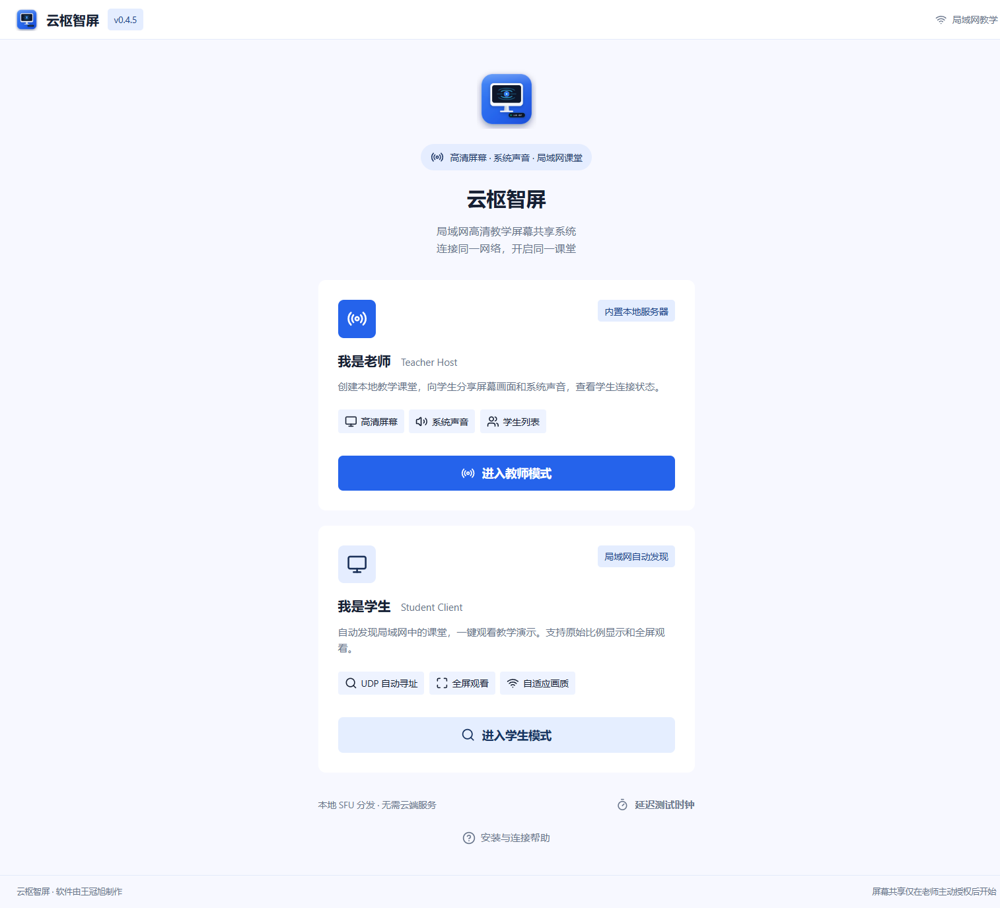

▣
想分享哪里，就选哪里
整个屏幕、应用窗口、自定义区域。拖拽框选时直接看见桌面，确认后再开始分享。
全屏 / 窗口 / 区域01 / 为面对面的教学而设计
适合教室、机房与局域网内的教学演示。老师选择共享内容，学生在自己的电脑上观看。
整个屏幕、应用窗口、自定义区域。拖拽框选时直接看见桌面，确认后再开始分享。
全屏 / 窗口 / 区域电脑声音和麦克风可分别开启；学生可调节音量、全屏观看，画面保持原始比例。
电脑声音 + 麦克风老师开始分享后生成六位码。学生在同一局域网输入当前分享码，自动寻找课堂。
局域网自动发现让技术退后，让教学向前
教师和学生使用同一款软件。内置课堂服务，无需另外安装 Node.js 或 LiveKit，也无需配置开发环境。

02 / 使用教程
开始之前：老师与学生连接同一局域网，并在各自的 Windows 电脑上安装软件。
下载并运行安装包，按安装向导完成安装。打开云枢智屏，点击“进入教师模式”。
点击“选择显示器或窗口”，选择整个屏幕、应用窗口或自定义区域。按需开启电脑声音与麦克风，再点击“开始分享”。
将右侧显示的六位分享码发给学生。教学完成后点击“结束课堂”；下次开课请使用新生成的码。
与老师使用同一个安装包。连接老师所在的局域网，打开软件，点击“进入学生模式”。
输入老师当前显示的六位分享码，点击“加入观看”。请核对数字；已结束课堂的旧码无法继续使用。
双击视频进入全屏，按 Esc 返回。老师允许时，在录像面板点击“选择保存位置”，再开始录制。录像保存为 WebM。
首次使用遇到 Windows 防火墙提示，请允许在专用网络通信。自动发现失败时，可在学生高级设置中启用手动服务器地址回退，填写老师的 IP 地址。
03 / 常见问题
不需要另外安装开发环境。安装包已包含本地课堂服务。教师和学生均需安装，Windows 首次使用可能需要允许专用网络防火墙通信。
正常课堂共享在局域网内完成，不依赖互联网。官网下载安装包需要联网。当前按同一局域网教学设计，不是跨互联网远程会议软件。
先核对老师当前显示的分享码，并确认老师正在分享、师生处于同一局域网。旧分享码会在课堂结束后失效。如果仍失败，检查防火墙、访客 Wi-Fi 和设备隔离，或使用高级设置手动填写老师地址。
学生录像保存为 WebM（当前优先使用 VP8 视频与 Opus 声音）。点击录像面板的“选择保存位置”可选择文件夹，软件会记住目录。默认保存在 Windows 视频目录下的“云枢智屏录像”。当前不直接保存为 MP4。
当前提供 Windows 10 / 11 的 64 位安装包。暂未提供 macOS、手机或网页版客户端。建议先在实际教学网络中进行小范围试用。
教师禁录策略会禁用学生客户端内的录像功能，但无法阻止其他录屏软件或手机拍摄。请结合课堂规则管理录制与分享。
READY FOR YOUR NEXT CLASS
云枢智屏 v0.4.5 · Windows 10 / 11 · 64 位
下载安装包 ↓更新前先结束课堂并退出旧版，再安装到原位置。
SHA-256
773f6752945e8f7d9665580a913035c72fae0dfb023142ac25db12533f7dfe57